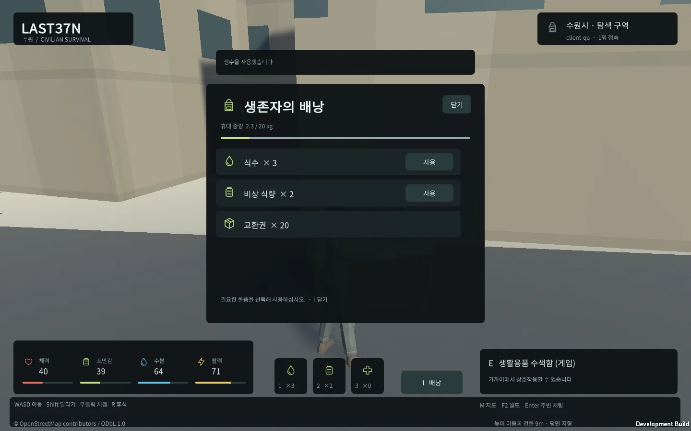
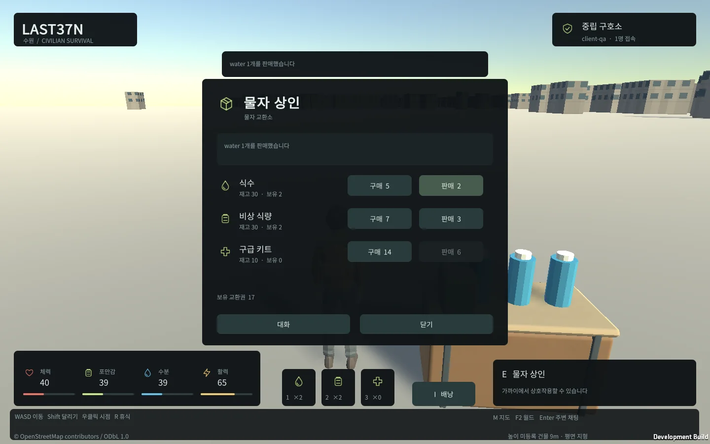

Tracefolio REPORTS & ISSUES
Tracefolio REPORTS & ISSUESUnity 수원 TPS 최초 프로토타입 · UI·NPC·캠프·경계 터렛 실행 검증
완료서버 권위 생존·수색·거래·PostGIS 저장·실제 수원 공간·Windows/Web 상호운용에 새 UI와 캠프 시설을 적용하고 실제 실행·100명 부하를 검증했습니다.
작업 결과
초기 프로토타입 구현과 필수 실행 검증을 마쳤습니다. 새 UI·물자 소품·역할별 NPC·의료 시설·서버 시간 기반 경계 터렛이 Windows와 Web 게임에 적용됐습니다. 상용 완성 게임이나 후속 전투 기능 완료를 뜻하지 않습니다.
변경 내용
적용 내용
Unity6000.0.83f1 TPS 클라이언트, Node24/TypeScript 서버, PostgreSQL17.11/PostGIS3.6.2를 로컬에서 실행합니다. 서버가 위치·생존·물자·거래를 결정하고 DB가 상태와 요청 영수증을 원자적으로 저장합니다. 세션 재접속·월드 격리·주변 채팅·100명 접속 제한을 구현했습니다.
실제 수원 OSM 경계와 건물37,308개·도로15,722개·물가/접근 제한96개·다리610개 구간을 사용합니다. 지도 라이브러리와 게임 규칙을 분리하고 시작점·장애물·상호작용 거리를 검증합니다. 도시 지형은 평면이며 미등록 높이32,673개 건물은 임시9m입니다.




편집 가능한 캐릭터/캠프 .blend, SVG 아이콘과 Unity 에셋을 보존했습니다. source local commit: 96c2c4bf8a2b84be86c15336cd0466802459e78d (원격 프로젝트 저장소는 설정되어 있지 않아 로컬 보존입니다). README와 아키텍처, 로컬 시작·저장 후 종료·재시작 도구를 실제 상태에 맞췄습니다.
검증
최종 서버/DB 검사37개 pass·0 fail·0 skip, TypeScript 검사 통과. 실제 PostGIS 거리 검증·트랜잭션 강제 실패 롤백·중복 동시 요청·캐시 퇴출 후 영수증·서버 프로세스 재시작을 검사했습니다.
Windows5개 기능 시나리오 통과. 최종 실제 Web18개 검사와 Windows 상호운용5개 검사가 통과했습니다. 이동·휴식·수색·소비·배낭·지도·월드 선택·구매/판매·치료, 양방향 채팅·접근·서버 중단·같은 캐릭터/인벤토리 복구·offline 요청 한번처리를 확인했습니다. 최종 JS/Unity 엔진 오류0입니다. 실제 Windows 게임에서 터렛 모델·Yaw 축·약32.05도 회전·발사 비활성 정책과 의료/물자 모델 로딩도 별도로 통과했습니다.
실제 PostgreSQL과100개 WebSocket의 약92초 지속 부하에서 이동80명·거래/채팅·10명 재접속을 검사했습니다.9900명령,900응답, p95 83.90ms, 최대 상태 간격220.10ms, 누락 대기0·서버/클라이언트 오류0. 로컬 시험이며100개 Unity 화면 렌더링·인터넷 지연·운영 SLA를 주장하지 않습니다.
지리 gzip/원문 SHA-256 일치, 출처/라이선스·개인정보 제외·대용량 후보 검사를 통과했습니다. 일반 Git 한도를 넘는 후보가 없어 Git Chunk는 불필요했고290MB 원본 다운로드·빌드·DB·비밀번호·세션은 무시합니다. start-local→checkpointed stop→start-local과 frozen dependency install을 실행했습니다.
실패 이력은 삭제하지 않았습니다. 엔진 stripping/serialization, 첫 NPC 입력 대상, 채팅 Enter, UI tint, 천막 방향을 실제 로그/화면으로 확인해 수정·재QA했습니다. Affinity 연결은 성공했으나 파일 접근은 PERMISSION_DENIED여서 권한을 우회하지 않고 SVG 렌더링으로 진행했습니다. Blender 썸네일 경고와 실제 에셋 저장·로딩을 구분했습니다.
중간 보고2는9791fe50/Actions41054169599에서 배포 성공·외부 HTTP200을 확인했습니다. 최종 보고서의 게시/외부 조회 결과와 전체 메뉴얼 최종 QA는 후속 검증 기록으로 보존합니다. 보고용4이미지는 WebP로 압축하고 해상도·바이트·실제 가독성을 확인했습니다.
교훈 검토: 기존 전역 지침의 실제 대상 로그/화면 검증·명시적 스테이징 규칙으로 충분하므로 중복 규칙을 추가하지 않았습니다. 전역 지침 변경 없음. 자동 승인 검토가 타 프로젝트 생성 HTML restore를 거부했으며 해당 작업을 실행하지 않고 별도 게시용 체크아웃에서 LAST37N과 공통 목록만 합쳤습니다.
남은 사항
초기 프로토타입의 구현·실행 검증 항목은 처리했습니다. 전투/PvP·세력·플레이어 거래·공동 창고·차량·이벤트·다른 도시는 후속 확장입니다. 상용 수준 환경 미술, 측정 지형/정밀 건물 높이, 길찾기 우회, 생산 인증·TLS·공개 호스팅·다중 서버 월드 운영은 포함하지 않습니다. 미정 밸런스는 provisional 설정에 유지합니다.
작업 시간
- 제안 시간: 전체 잔여 범위4
10시간(시작2026-10-30 18:17:30 KST), 추가 UI/시설 범위60120분(시작20:44:21 KST). - 실제로 완료된 시간: 구현·실행 검증 후 결과 기록 2026-10-30 21:29:24 KST(Asia/Seoul). 전체 시작 후 3시간 11분 54초, 추가 범위 45분 3초. 보고서 게시·외부 확인을 포함한 최종 전달 시각은 전체 메뉴얼의 최종 QA와 채팅에 별도 기록합니다.
- XERJ: 미사용 — XERJ 도구 미제공으로 rg를 사용하고 현재 소스·설정·실행 로그·실제 게임 화면으로 검증했습니다.